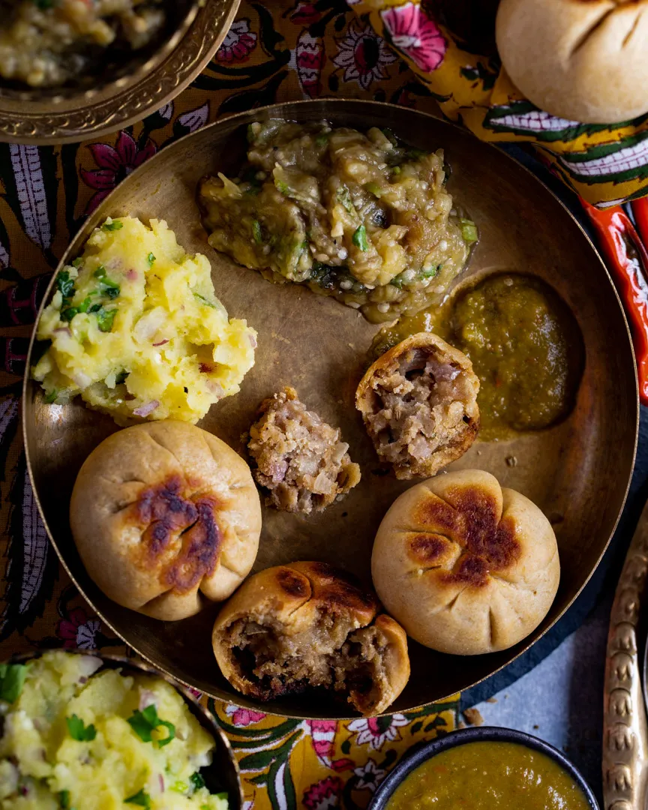
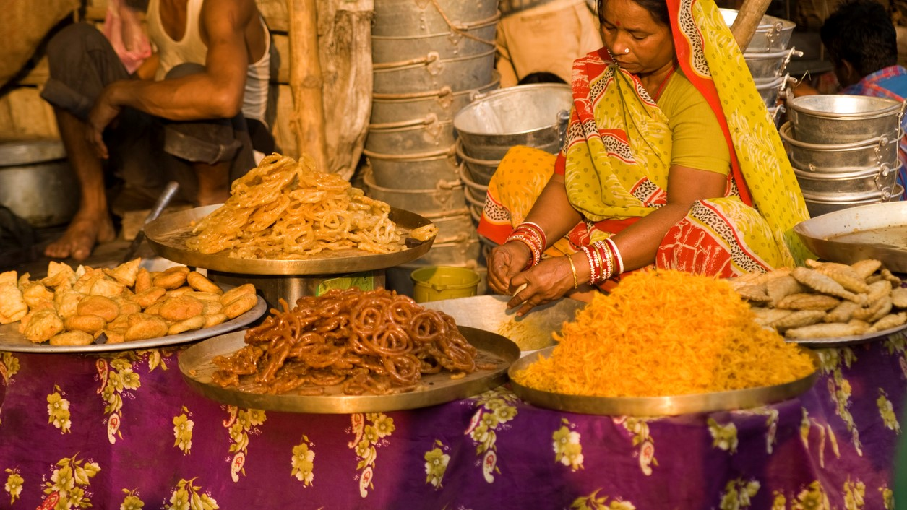
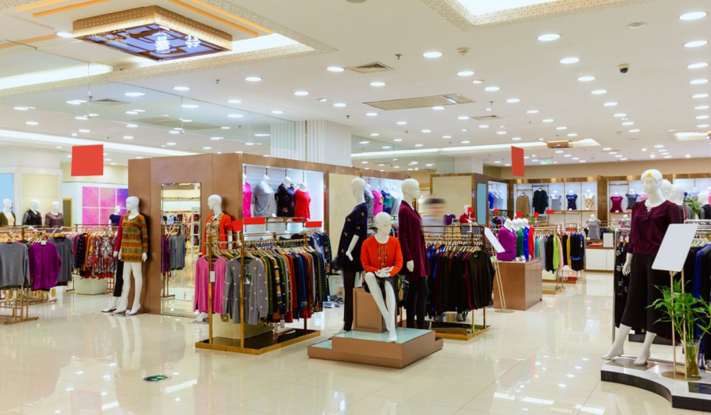

Patna city guide
Follow the Ganga into temples, museums, markets, food lanes and ancient Pataliputra.
Pick a mood, open a category page, then tap any card for a full detail page with planning notes, nearby places and local context.
Start here
Choose the Patna you want today.
Open a category page first, then explore detailed cards for places, food, culture, shopping and nearby heritage routes.
 Temples and faith
Patna Sahib, Mahavir Mandir, Patan Devi and riverside rituals.
Temples and faith
Patna Sahib, Mahavir Mandir, Patan Devi and riverside rituals.
 History and museums
Golghar, Bihar Museum, Kumhrar, Agam Kuan and civic landmarks.
History and museums
Golghar, Bihar Museum, Kumhrar, Agam Kuan and civic landmarks.

Food and sweets Litti chokha, sattu paratha, thekua, khaja, tilkut and street snacks. Ghats and recreation
Ganga Path, Gandhi Ghat, Eco Park, zoo, planetarium and water park.
Ghats and recreation
Ganga Path, Gandhi Ghat, Eco Park, zoo, planetarium and water park.
City guide
Famous things of Patna in one detailed, responsive card wall.
Use the filters to focus on a category. Every card includes a detailed description, the main reason to visit, and a practical note so it is useful on mobile and desktop.
Patna highlights
Explore by famous category
One-day plan
A practical Patna route
Use this when you want a balanced first visit with history, riverfront, food and shopping without jumping across the city too much.
Start with Mahavir Mandir or Patna Sahib depending on where you are staying, then move toward Kumhrar or Agam Kuan if ancient history is your priority.
Choose Bihar Museum or Patna Museum for an indoor history block, then eat litti chokha, sattu paratha or chana ghugni around your next stop.
Move to Golghar, Gandhi Maidan and the riverfront. Finish with Ganga Aarti, a Ganga Path drive, or a market stop at Maurya Lok or Khaitan Market.
City mood
Patna feels best when the old city, river and food are planned together.
For a calm day, choose museums, Eco Park and the river. For a dense local day, choose Patna Sahib, old markets, street snacks and ghats. For families, choose the zoo, planetarium, mall stop and an easy dinner.



